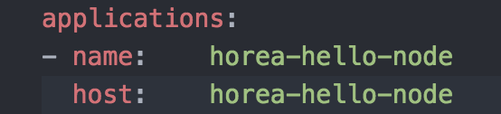
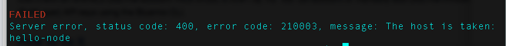

Let’s learn how to build that Node.js web-server using Bluemix! If you prefer video tutorials, please watch my video on this topic. Before we start, you will need to do a few things.
1) Get a Bluemix Account
2) Install Homebrew if you have a mac. Otherwise, skip this step.
3) Install npm/node for Mac or npm/node for Windows
4) Install cf command line tool
$ git clone https://github.com/IBM-Bluemix/bluemix-hello-node
$ cd bluemix-hello-node$ npm install
$ npm start
$ cf api https://api.ng.bluemix.net
If all went well, you should see this:
Setting api endpoint to https://api.ng.bluemix.net... OK
Next we need to login to Bluemix:
$ cf login
If you have a IBM w3ID, this will not work, and you will have to use this command instead:
$ cf login -sso
You’ll get prompted with a one time code, and then you can simply copy and paste that code to login.
This is the cool part! Getting to put that app out there!
Firstly, let’s open up our manifest.yml in your favorite text editor, mine being Atom.
Now we must come up with a unique URL for our site. This is done by changing the host: line in the manifest.yml file.
Change the line host: hello-node to username-hello-node. Should look similar to this, except with your own user name, not mine. 
One last command:
$ cf push
If you run into this error  it is because the name is not unique.
If there are no errors, you are officially deployed! Go to http://username-hello-node.mybluemix.net/ to see your finished product! One last thing: if you want to make some changes, simply change something in the index.html file for example, and then just use cf push to deploy your latest changes. Happy coding!